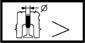

VALVE GUIDES
- Path
- Technical Data > MANUFACTURING DATA > 10 ENGINE > 1016 CYLINDER HEAD/S > VALVE GUIDES
- Kind
- technical data / specifications
- Applies to
- all engines; all production periods
- Interactive page
- https://sloeber94.github.io/elrnDB-fDbl/en/#/2582653
Applies to: all engines; all production periods
Diameter of valve guide bore in cylinder head (mm) | Validity | |||
|---|---|---|---|---|
12.950 - 12.977 | 1.2 8v 1.6 16v | |||
Inner diameter (mm) | Validity |  | ||
8.022 - 8.040 | 1.9 DIESEL | |||
Outer diameter (mm) | Validity |  | ||
14.010 - 14.030 | 1.9 DIESEL | |||
Oversize (mm) 0.005 | ||||
Outer diameter oversize () | Validity |  | ||
0.05 - 0.10 - 0.25 | 1.9 DIESEL | |||
Valve guide outer diameter undersize 0.05 (mm) | Validity | |||
14.060 - 14.080 | 1.9 DIESEL | |||
Valve guide outer diameter undersize of 0.25 (mm) | Validity | |||
14.260 - 14.280 | 1.9 DIESEL | |||
Valve guide outer diameter undersize of 0.10 (mm) | Validity | |||
14.110 - 14.130 | 1.9 DIESEL | |||
Applies to: all engines; all production periods
Clearance between valve guide - bore in cylinder head (mm) | Validity | |||
|---|---|---|---|---|
0.033 - 0.080 | 1.6 16v | |||
First oversize on valve guide outer diameter (mm) | Validity | |||
- 0.05 | 1.2 8v | |||
Inlet and exhaust valve guide outer diameter (mm) | Validity | | ||
13.010 - 13.030 | 1.2 8v | |||
Inlet and exhaust valves - valve guides clearance (mm) | Validity | |||
0.022 - 0.058 | 1.2 8v | |||
Inner diameter (mm) | Validity | | ||
6.020 ÷ 6.038 | 1.3 JTD | |||
Inner diameter (mm) | Validity | |||
8.022 ÷ 8.040 | 1.9 JTD | |||
Interference between valve guides- seats (mm) | Validity | |||
0.033 ÷ 0.080 | 1.2 8v | |||
Outer diameter (mm) | Validity | | ||
11.010 ÷ 11.030 | 1.3 JTD | |||
Outer diameter (mm) | Validity | |||
14.010 ÷ 14.030 | 1.9 JTD | |||
Oversizes (mm) 0.05, 0.10, 0.25 | ||||
Outer diameter oversize (mm) | Validity | |||
0.05 / 0.10 / 0.25 | 1.3 JTD | |||
Oversizes (mm) | Validity | |||
00.5 / 0.10 / 0.25 | 1.6 16v | |||
Second oversize on valve guide outer diameter (mm) | Validity | |||
- 0.10 | 1.2 8v | |||
Third oversize on valve guide outer diameter (mm) | Validity | |||
- 0.25 | 1.2 8v | |||
Valve guide external diameter (mm) | Validity | | ||
Exhaust | Inlet | |||
13.030 | 13.010 | 1.6 16v | ||
Valve guide internal diameter (mm) | Validity | | ||
7.022 ÷ 7.040 | 1.2 8v 1.6 16v | |||